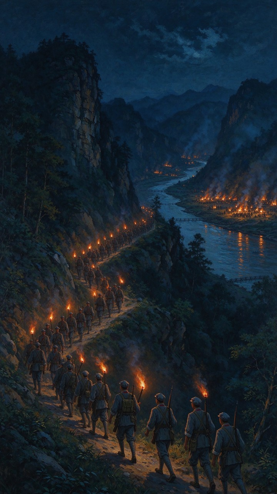

纪念红军长征胜利 90 周年
重走长征路
从于都河畔到三军会师，12 个历史抉择。
每一步都曾真实发生——选错，征程即止。
配图由 AI 生成（豆包 · Seedream）
史实依据《中国共产党简史》等权威资料
你将如何抉择？
失败
历史没有如果——回到起点，再走一次。

纪念红军长征胜利 90 周年
从于都河畔到三军会师，12 个历史抉择。
每一步都曾真实发生——选错，征程即止。
配图由 AI 生成（豆包 · Seedream）
史实依据《中国共产党简史》等权威资料
历史没有如果——回到起点，再走一次。